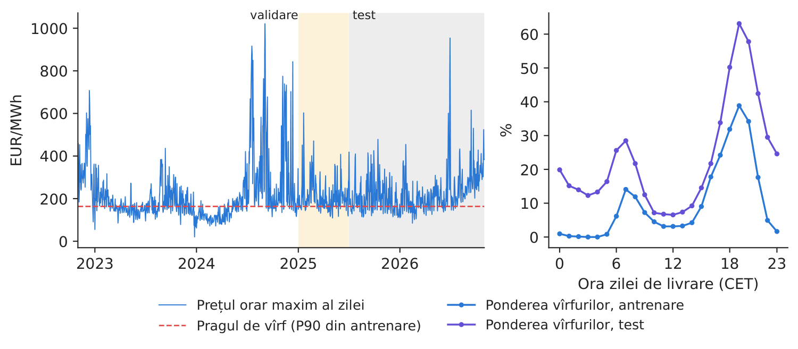
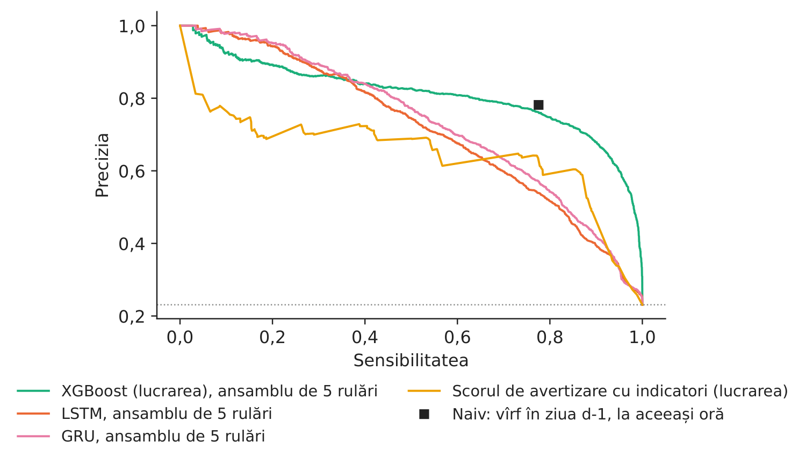
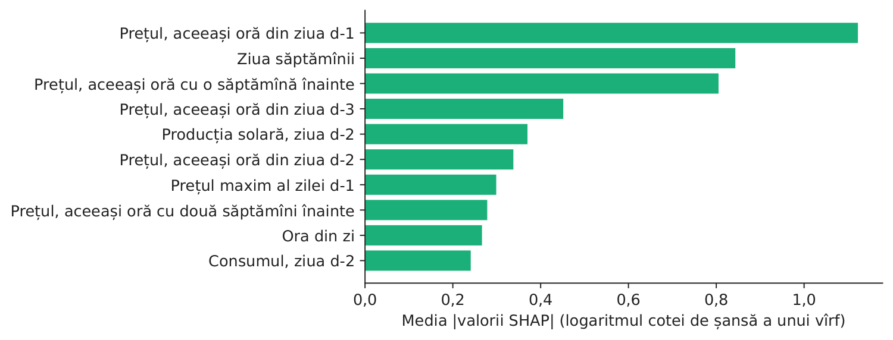
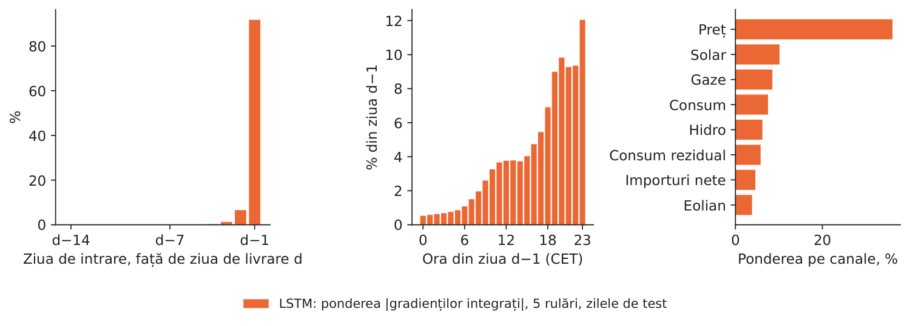
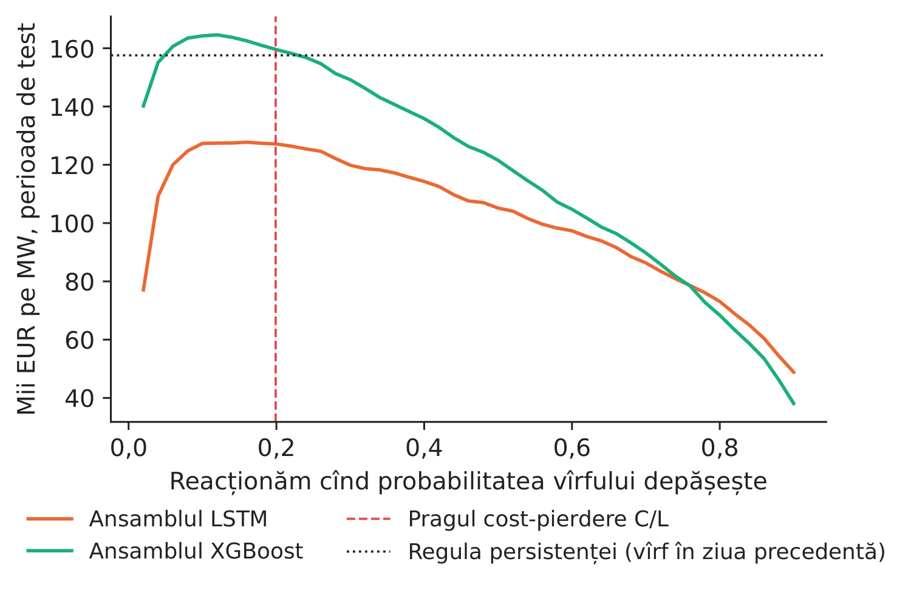

Studiul de caz 2 · Cursul 5
Rețele recurente pentru avertizarea timpurie explicabilă a vîrfurilor de preț
Prof. dr. Daniel Traian PELE
Academia de Studii Economice din București, Departamentul de Statistică și Econometrie
Academia Română, Institutul de Prognoză Economică
Lucrarea de referință
Andrei, A.-V., Pele, D.-T., Cramer, A.-A., Amza, A. și Diaconu, D. (2026). Explainable AI-based early warning system for electricity price spikes: Evidence from the Romanian market. Proceedings of the International Conference on Business Excellence, 20(1), 4820–4836. doi:10.2478/picbe-2026-0352
Problema decizională
Un consumator industrial din România (o oțelărie, o fabrică de ciment, un centru de date) poate muta o parte din consum dintr-o anumită oră dacă este avertizat cu o zi înainte; un operator de baterii își poate păstra energia stocată pentru seară. În fiecare dimineață, înainte de închiderea licitației pentru ziua următoare, la prînz, managerul de energie se întreabă: vor exista mîine vîrfuri de preț, în ce ore și de ce? Echipa de analiză propune o rețea neuronală recurentă care „citește” ultimele două săptămîni ale pieței, oră cu oră, asemenea unui comerciant cu experiență. Managerul trebuie să decidă dacă rețeaua aduce un cîștig față de arborii de decizie construiți secvențial, deja folosiți în cercetare, și dacă alertele ei pot fi explicate consiliului de administrație înainte de a se acționa pe baza lor.
Lucrarea de referință
Întrebarea de cercetare. Poate inteligența artificială explicabilă (XAI, explainable artificial intelligence) să identifice factorii vîrfurilor de preț de pe piața pentru ziua următoare din România? Este prognoza consumului rezidual una dintre principalele variabile explicative? Se poate construi un sistem operațional de avertizare timpurie pe baza unor indicatori de echilibru ușor de interpretat (p. 4821)?
Datele. 5.000 de ore consecutive de pe piața pentru ziua următoare din România, martie–septembrie 2024, cu 70 de variabile construite: producția, consumul și prognozele lor pentru ziua următoare, publicate de Rețeaua europeană a operatorilor de transport și de sistem pentru energie electrică (ENTSO-E), prețurile combustibililor și ale certificatelor de emisii, temperaturile; o împărțire cronologică 80/10/10, care exclude scurgerea de informație (p. 4824–4826).
Metoda. Modele cu arbori de decizie construiți secvențial (XGBoost, eXtreme Gradient Boosting) și Random Forest (păduri aleatoare), explicate global cu SHAP (SHapley Additive exPlanations) și local cu LIME (Local Interpretable Model-agnostic Explanations); un scor de avertizare timpurie care combină praguri ale unor indicatori, ponderate cu scorul F1 din eșantionul de validare, cu pragul de alertă \(W^*=0{,}477\) ales pe eșantionul de validare; un eveniment de preț ridicat este un preț peste percentila 90, adică 149,99 EUR/MWh (p. 4827, 4832).
Principalele rezultate ale lucrării.
- Cel mai bun model explică 67,6 % din varianța prețului pe eșantionul de test (\(R^2=0{,}676\), eroarea absolută medie 24,58 EUR/MWh) (p. 4828).
- Cele mai influente variabile sînt prețul din ora anterioară (media \(|\)SHAP\(|\) = 14,30) și prognoza consumului rezidual (10,13) (Tabelul 5, p. 4830–4831).
- Pe eșantionul de test, sistemul de avertizare are precizia 0,470, sensibilitatea 0,722 și scorul F1 0,569 (Tabelul 7, p. 4832); indicatorul consumului rezidual are, singur, cel mai mare scor F1 pe eșantionul de validare, 0,792 (p. 4832).
- Ratarea unui vîrf costă mult mai mult decît reacția la o alarmă falsă, de aceea sistemul acordă prioritate sensibilității (p. 4832); semnalele de echilibru ușor de interpretat își păstrează valoarea ca indicatori de direcție și completează prognozele de preț (p. 4834).
O lucrare înrudită a grupului nostru: Andrei, Pele și Cramer (2026), Multi-horizon explainability in energy price forecasting, PICBE (Proceedings of the International Conference on Business Excellence) 20(1), 104–117, doi:10.2478/picbe-2026-0014: pe datele orare din România, 2018–2024, variabilele pe termen scurt (6–24 de ore) concentrează 41 % din contribuția SHAP atribuită orizonturilor, iar inerția prețului devine de 4,25 ori mai importantă în regimurile de preț ridicat (rezumat) — adică întrebarea cît de departe în trecut ajunge memoria pieței, la care rețeaua noastră recurentă răspunde cu gradienții integrați.
Metoda
Intuiția metodei
Vîrfurile apar atunci cînd sistemul este sub presiune, iar presiunea se acumulează în cîteva zile: o seară scumpă ieri, o săptămînă cu vînt slab, un nivel redus al producției hidro. Arborii de decizie construiți secvențial văd trecutul numai prin variabilele alese de analist („prețul de acum 24 de ore”, „prețul de acum o săptămînă”). O rețea recurentă citește istoricul orar brut, în ordine, și păstrează o memorie a celor văzute, astfel încît poate descoperi singură asemenea tipare. Pentru a avea încredere în ea, ne întrebăm ce ore din trecut îi influențează alerta: gradienții integrați descompun ieșirea rețelei în contribuțiile fiecărei ore de intrare, așa cum face SHAP pentru arbori.
Un vîrf în ora \(h\) a zilei de livrare \(d\) este \(S_{d,h}=\mathbf{1}\{p_{d,h}>\theta\}\), unde \(\theta\) este percentila 90 a prețurilor din eșantionul de antrenare. Ofertele pentru ziua \(d\) se închid la ora 12:00 CET (ora Europei Centrale) în ziua \(d-1\): prețurile sînt cunoscute pînă în ziua \(d-1\), consumul și producția pînă în ziua \(d-2\).
Modelul din lucrare. XGBoost estimează \(\hat\pi_{d,h}=\sigma\big(\sum_{k=1}^{K}f_k(\mathbf x_{d,h})\big)\), o sumă de \(K\) arbori de regresie \(f_k\) transformată cu funcția logistică \(\sigma(z)=1/(1+e^{-z})\); SHAP descompune fiecare prognoză, pe scara logaritmului cotei de șansă, în \(\phi_0+\sum_j\phi_{j}\), unde \(\phi_j\) este valoarea Shapley a variabilei \(j\). Scorul bazat pe indicatori este \(W_{d,h}=\sum_m w_m\mathbf{1}\{x_{m,d,h}\ge\theta_m\}\), cu ponderile \(w_m\propto F1_m\); alerta se emite cînd \(W_{d,h}\ge W^*\).
Rețeaua recurentă (cursul 5). Intrarea pentru ziua \(d\) este secvența \(\mathbf u_1,\dots,\mathbf u_{T}\) a celor \(T=336\) de ore din zilele \(d-14,\dots,d-1\); \(\mathbf u_t\) conține prețul standardizat al orei \(t\), consumul, producția solară, eoliană, consumul rezidual, producția hidro, pe gaze și importurile nete din aceeași oră a zilei precedente, precum și ora din zi, sub forma \((\sin,\cos)\). O celulă cu memorie lungă pe termen scurt (LSTM, Long Short-Term Memory) actualizează o memorie \(\mathbf c_t\) și o stare \(\mathbf h_t\): \(\mathbf f_t=\sigma(\mathbf W_f[\mathbf h_{t-1},\mathbf u_t]+\mathbf b_f)\), \(\mathbf i_t=\sigma(\mathbf W_i[\mathbf h_{t-1},\mathbf u_t]+\mathbf b_i)\), \(\mathbf o_t=\sigma(\mathbf W_o[\mathbf h_{t-1},\mathbf u_t]+\mathbf b_o)\), \(\mathbf c_t=\mathbf f_t\odot\mathbf c_{t-1}+\mathbf i_t\odot\tanh(\mathbf W_c[\mathbf h_{t-1},\mathbf u_t]+\mathbf b_c)\), \(\mathbf h_t=\mathbf o_t\odot\tanh(\mathbf c_t)\), unde \(\mathbf f_t,\mathbf i_t,\mathbf o_t\) sînt porțile de uitare, de intrare și de ieșire, iar \(\odot\) este produsul element cu element; unitatea recurentă cu porți (GRU, Gated Recurrent Unit) este o variantă mai simplă, cu două porți. Starea finală \(\mathbf h_T\) (48 de unități), împreună cu ziua săptămînii și luna, \(\mathbf s_d\), trece printr-un strat dens mic, care produce 24 de logiți \(z_{d,h}\), cîte unul pentru fiecare oră de livrare, iar \(\hat\pi_{d,h}=\sigma(z_{d,h})\). Ponderile minimizează entropia încrucișată binară \(\mathcal L=-\frac1N\sum_{d,h}\big[S_{d,h}\log\hat\pi_{d,h}+(1-S_{d,h})\log(1-\hat\pi_{d,h})\big]\), cu algoritmul AdamW, oprire timpurie după pierderea de validare și cinci inițializări aleatoare.
Explicația în timp (cursul 11). Pentru o intrare \(\mathbf u\) și referința \(\mathbf u'=\mathbf 0\) (media din antrenare a fiecărui canal), gradientul integrat al intrării \(j\) (o oră, un canal) este \(\mathrm{IG}_j=(u_j-u'_j)\int_0^1\frac{\partial F(\mathbf u'+\alpha(\mathbf u-\mathbf u'))}{\partial u_j}\,d\alpha\), cu \(F=\sum_h z_{d,h}\) scorul total de vîrf al zilei; suma gradienților integrați este \(F(\mathbf u)-F(\mathbf u')\), aceeași proprietate de „completitudine” ca la SHAP.
Calitatea și decizia. Precizia \(=TP/(TP+FP)\), sensibilitatea \(=TP/(TP+FN)\), iar \(F1\) este media lor armonică, unde \(TP\), \(FP\), \(FN\) sînt numărul rezultatelor pozitive adevărate, pozitive false și negative false; PR-AUC este aria de sub curba precizie–sensibilitate (o regulă aleatoare obține ponderea vîrfurilor); AUC este aria de sub curba ROC (receiver operating characteristic). Dacă reacția costă \(C\) pe MWh, iar un vîrf neacoperit costă \(L\) pe MWh, reacționați de fiecare dată cînd \(\hat\pi_{d,h}>C/L\).
În practică
Comparați rețeaua cu arborii din lucrare și cu o regulă naivă, pe aceleași ore și pe mai multe inițializări aleatoare, înainte de a plăti pentru complexitate; cereți pentru fiecare alertă o explicație în timp; stabiliți pragul de reacție din propriile costuri (\(C/L\)).
Replicarea pe datele cursului
Notebook-ul C2_notebook_RO.ipynb folosește prețurile orare pentru ziua următoare din România, consumul și producția pe surse (energy-charts.info), pe o grilă de zile de livrare CET. Antrenare 2023–2024 (731 de zile), validare ianuarie–iunie 2025, test iulie 2025 – octombrie 2026 (488 de zile, 11.710 de ore evaluate pentru toate modelele).
Pragul de vîrf este 163,43 EUR/MWh (percentila 90 din antrenare; în lucrare: 149,99). Ponderea orelor cu vîrfuri: 10,0 % în antrenare, 14,2 % în validare, 23,1 % în perioada de test.
Față de lucrare, implementarea de la curs ține seama de faptul că datele noastre nu conțin prognoze pentru ziua următoare ale consumului și ale producției solare și eoliene: toate modelele folosesc valorile realizate în ziua \(d-2\), ultima zi măsurată la închiderea porții; nu include variabile meteorologice sau prețurile combustibililor; are aproximativ 20 de variabile în loc de 70 și un eșantion mai lung, cu un alt regim de piață. Rețelele LSTM și GRU (48 de unități, fereastră de 14 zile) sînt contribuția cursului la lucrare.

Figura 1. Prețul orar maxim al fiecărei zile și pragul de vîrf (stînga); ponderea orelor cu vîrfuri, pe ore ale zilei, în antrenare și în test (dreapta).
Sursa: energy-charts.info; calcule proprii, noiembrie 2022 – octombrie 2026.
Tabelul 1. Avertizarea timpurie în perioada de test (iulie 2025 – octombrie 2026), cu pragurile de alertă alese pe validare după F1. a.s. = abaterea standard a rulărilor individuale, pe 5 inițializări aleatoare. Cea mai bună valoare este marcată cu aldine.
| Regula de avertizare (perioada de test) | Precizia | Sensibilitatea | F1 | a.s. | PR-AUC | a.s. | AUC |
|---|---|---|---|---|---|---|---|
| XGBoost (lucrarea), ansamblu de 5 rulări | 0,821 | 0,524 | 0,640 | 0,019 | 0,811 | 0,006 | 0,946 |
| LSTM, ansamblu de 5 rulări | 0,725 | 0,522 | 0,607 | 0,018 | 0,718 | 0,005 | 0,865 |
| GRU, ansamblu de 5 rulări | 0,735 | 0,544 | 0,625 | 0,012 | 0,736 | 0,008 | 0,875 |
| Scorul de avertizare cu indicatori (lucrarea) | 0,716 | 0,409 | 0,521 | – | 0,649 | – | 0,871 |
| Persistență: vîrf la aceeași oră în ziua precedentă | 0,782 | 0,776 | 0,779 | – | 0,843 | – | 0,934 |
Sursa: calcule proprii. Lucrarea (eșantionul de test, 2024): sistemul de avertizare are precizia 0,470, sensibilitatea 0,722 și F1 0,569 (Tabelul 7).
Ce arată datele. Regimul vîrfurilor s-a schimbat: în perioada de test 23,1 % din ore sînt vîrfuri (10,0 % în antrenare), concentrate seara (orele 18–21: 53,4 % din ore în test, 30,6 % în antrenare). Numai cu informația de la închiderea porții, modelul XGBoost din lucrare ordonează cel mai bine orele (AUC 0,946, PR-AUC 0,811); primele variabile după SHAP sînt Prețul, aceeași oră din ziua d-1, Ziua săptămînii și Prețul, aceeași oră cu o săptămînă înainte — domină prețurile anterioare, ca în lucrare, unde prețul din ora anterioară este pe primul loc. Rețelele recurente, care primesc numai istoricul orar brut, obțin PR-AUC 0,718 (LSTM; rulări individuale: 0,705–0,718) și 0,736 (GRU; 0,722–0,742). Bootstrap-ul pe blocuri de zile de test dă o diferență de PR-AUC LSTM \(-\) XGBoost de \(-\)0,092 (interval de 95 %: \(-\)0,114 pînă la \(-\)0,071) și o diferență de F1 de \(-\)0,033 (\(-\)0,061 pînă la \(-\)0,003): pe doi ani de date de antrenare, variabilele construite în lucrare depășesc rețeaua. În acest regim nou, persistența este greu de depășit: regula naivă a persistenței (se semnalează un vîrf la o anumită oră dacă a existat un vîrf la aceeași oră în ziua precedentă) are cel mai mare scor F1 (0,779) și cea mai mare sensibilitate (0,776), motiv pentru care lucrarea consideră sensibilitatea și semnalele simple, verificabile, esențiale pentru un sistem de avertizare timpurie.

Figura 2. Curbele precizie–sensibilitate în perioada de test.
Sursa: calcule proprii; linia punctată = ponderea vîrfurilor.

Figura 3. Primii 10 factori ai alertelor XGBoost (SHAP).
Sursa: clasificatorul nostru XGBoost, inițializarea 0; 3.000 de ore de test.

Figura 4. Ce ore din trecut declanșează alerta rețelei LSTM? Ponderea \(|\)gradienților integrați\(|\) pe ore de intrare (stînga) și pe canale (dreapta).
Sursa: calcule proprii; 5 rulări LSTM, toate zilele de test, 32 de pași de integrare.
Explicarea rețelei. Gradienții integrați arată o memorie scurtă: 91,8 % din atribuire revine ultimei zile cunoscute (\(d-1\)), 6,6 % zilei \(d-2\) și 1,7 % celor douăsprezece zile anterioare; în ziua \(d-1\), orele de seară 17–21 concentrează 40,4 %. Pe canale, prețul are 36,1 %, urmat de canalul Solar. Explicația arată și de ce rețeaua rămîne în urma arborilor: nu a învățat ciclul săptămînal (ziua \(d-7\): 0,01 %), pe care XGBoost îl primește gata construit, ca „preț cu o săptămînă înainte”, a treia variabilă după SHAP. Explicarea unui model este calea prin care aflăm ce îi lipsește.

Figura 5. Valoarea netă a reacției în funcție de pragul de alertă, 1 MW de consum flexibil, perioada de test.
Sursa: calcule proprii; \(C\) = 30 EUR/MWh.
Cifra relevantă pentru decizie. La un cost al reacției \(C\) = 30 EUR/MWh (ipoteză) și o pierdere \(L\) = 150,8 EUR/MWh (diferența dintre prețul mediu al orelor cu vîrfuri și cel al celorlalte ore, în antrenare), pragul cost–pierdere este \(C/L\) = 0,199. Reacționînd la acest prag cu 1 MW de consum flexibil, s-ar fi economisit în perioada de test aproximativ 159,5 mii EUR cu XGBoost și 127,3 mii EUR cu rețeaua LSTM; regula naivă economisește 157,6 mii EUR.
Întrebări pentru discuție
- Pe datele noastre, modelul XGBoost din lucrare depășește rețeaua LSTM. Ce ar trebui să se schimbe (mai mulți ani de date, mai multe canale de intrare, prognoze pentru ziua următoare) pentru a încerca din nou rețeaua?
- Gradienții integrați arată că rețeaua se uită aproape numai la ziua de ieri. Este un rezultat liniștitor sau sugerează că ar fi suficientă o regulă mai simplă? Cum i-ați oferi rețelei ciclul săptămînal?
- O inițializare a rețelei obține un scor mai bun decît alta, pe aceleași date. Cîte rulări ați cere înainte de a aproba un model și cum ați raporta dispersia rezultatelor?
- Care sînt valorile \(C\) și \(L\) pentru compania dumneavoastră? Cum ar diferi pragul de alertă pentru o fabrică de ciment și pentru un operator de baterii?
- În 2025–2026, vîrfurile au devenit evenimente zilnice, de seară. Cine din companie ar trebui să decidă cînd se recalibrează pragul și cînd se reantrenează modelele?
Limitele replicării
(i) Toate modelele sînt estimate o singură dată (antrenare 2023–2024, validare ianuarie–iunie 2025) și nu sînt reestimate în cele 16 luni de test. (ii) Prognozele pentru ziua următoare ale consumului și ale producției solare și eoliene, folosite în lucrare, sînt înlocuite cu valorile realizate în ziua \(d-2\); nu se folosesc variabile meteorologice sau prețurile combustibililor. (iii) Rețelele sînt mici (un singur strat recurent cu 48 de unități) și nu sînt optimizate; cele cinci inițializări aleatoare măsoară variabilitatea antrenării. (iv) Gradienții integrați depind de intrarea de referință (aici, media din antrenare) și explică scorul total de vîrf al zilei, nu fiecare oră separat. (v) Calculul cost–pierdere presupune că, de fiecare dată, consumul flexibil poate fi mutat și ignoră efectul acestei mutări asupra prețului.
Studiul de caz 2 pe scurt
- ÎntrebareVor exista mîine vîrfuri de preț, de ce și merită o rețea recurentă?
- DatePrețuri orare RO (România), consum și producție, 2023–oct. 2026; vîrf = preț peste percentila 90 din antrenare.
- MetodăXGBoost + SHAP (lucrarea); LSTM și GRU pe 14 zile de istoric orar; gradienți integrați; regula cost–pierdere.
- RezultatPR-AUC: XGBoost 0,811, LSTM 0,718; 91,8 % din atribuirea rețelei revine ultimei zile cunoscute, nimic ciclului săptămînal.
- DeciziePăstrați arborii din lucrare și reperul de persistență; reacționați cînd probabilitatea unui vîrf \(> C/L\) (0,199).

Sursa: rețelele noastre LSTM (5 rulări) pe date energy-charts.info; gradienți integrați pe perioada de test, iulie 2025 – octombrie 2026.
Abrevieri
| AUC | aria de sub curba ROC, ROC = receiver operating characteristic |
|---|---|
| CET | ora Europei Centrale |
| ENTSO-E | Rețeaua europeană a operatorilor de transport și de sistem pentru energie electrică |
| GRU | Gated Recurrent Unit |
| LIME | Local Interpretable Model-agnostic Explanations |
| LSTM | Long Short-Term Memory |
| PICBE | Proceedings of the International Conference on Business Excellence |
| PR-AUC | aria de sub curba precizie–sensibilitate |
| RO | România |
| ROC | receiver operating characteristic |
| SHAP | SHapley Additive exPlanations |
| XAI | inteligență artificială explicabilă |
Textul, cifrele, graficele și tabelele acestei pagini sînt cele ale studiului de caz; toate cifrele sînt calculate de notebook-ul studiului pe datele cursului.